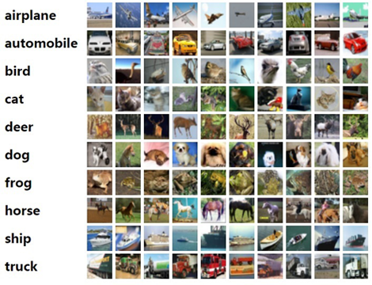

Image Classification Using ResNet-50 Network
Linux Ascend GPU Whole Process Beginner Intermediate Expert

Overview
Computer vision is one of the most widely researched and mature technology fields of deep learning, and is widely applied to scenarios such as mobile phone photographing, intelligent security protection, and automated driving. Since AlexNet won the ImageNet competition in 2012, deep learning has greatly promoted the development of the computer vision field. Almost all the most advanced computer vision algorithms are related to deep learning. Deep neural network can extract image features layer by layer and retain local invariance. It is widely used in visual tasks such as classification, detection, segmentation, retrieval, recognition, promotion, and reconstruction.
This chapter describes how to apply MindSpore to computer vision scenarios based on image classification tasks.
Image Classification
Image classification is one of the most basic computer vision applications and belongs to the supervised learning category. For example, determine the class of a digital image, such as cat, dog, airplane, or car. The function is as follows:
def classify(image):
label = model(image)
return label
The key point is to select a proper model. The model generally refers to a deep convolutional neural network (CNN), such as AlexNet, VGG, GoogleNet, and ResNet.
MindSpore presets a typical CNN, developer can visit model_zoo to get more details.
MindSpore supports the following image classification networks: LeNet, AlexNet, and ResNet.
Task Description and Preparation

Figure 1: CIFAR-10 dataset [1]
The CIFAR-10 dataset contains 10 classes of 60,000 images. Each class contains 6000 images. 50,000 images are for training and 10,000 images are for testing. The size of each image is 32 x 32 pixels.
Generally, a training indicator of image classification is accuracy, that is, a ratio of the quantity of accurately predicted examples to the total quantity of predicted examples.
Next, let’s use MindSpore to solve the image classification task. The overall process is as follows:
Download the CIFAR-10 dataset.
Load and preprocess data.
Define a convolutional neural network. In this example, the ResNet-50 network is used.
Define the loss function and optimizer.
Call the high-level
ModelAPI to train and save the model file.Load the saved model for inference.
This example uses the hardware platform of the Ascend 910 AI processor. You can find the complete executable sample code at https://gitee.com/mindspore/docs/tree/r1.1/tutorials/tutorial_code/resnet.
The key parts of the task process code are explained below.
Downloading the CIFAR-10 Dataset
CIFAR-10 dataset download address: the website of Cifar-10 Dataset. In this example, the data is in binary format. In the Linux environment, run the following command to download the dataset:
wget https://www.cs.toronto.edu/~kriz/cifar-10-binary.tar.gz
Run the following command to decompress the dataset:
tar -zvxf cifar-10-binary.tar.gz
Data Preloading and Preprocessing
Load the dataset.
Data can be loaded through the built-in dataset format
Cifar10DatasetAPI.Cifar10Dataset: The read type is random read. The built-in CIFAR-10 dataset contains images and labels. The default image format is uint8, and the default label data format is uint32. For details, see the description of theCifar10DatasetAPI.The data loading code is as follows, where
data_homeindicates the data storage location:cifar_ds = ds.Cifar10Dataset(data_home)
Enhance the data.
Data augmentation is to normalize data and enrich the number of data samples. Common data augmentation modes include cropping, flipping, and color change. MindSpore calls the
mapmethod to perform augmentation operations on images.resize_height = 224 resize_width = 224 rescale = 1.0 / 255.0 shift = 0.0 # define map operations random_crop_op = C.RandomCrop((32, 32), (4, 4, 4, 4)) # padding_mode default CONSTANT random_horizontal_op = C.RandomHorizontalFlip() resize_op = C.Resize((resize_height, resize_width)) # interpolation default BILINEAR rescale_op = C.Rescale(rescale, shift) normalize_op = C.Normalize((0.4914, 0.4822, 0.4465), (0.2023, 0.1994, 0.2010)) changeswap_op = C.HWC2CHW() type_cast_op = C2.TypeCast(mstype.int32) c_trans = [] if training: c_trans = [random_crop_op, random_horizontal_op] c_trans += [resize_op, rescale_op, normalize_op, changeswap_op] # apply map operations on images cifar_ds = cifar_ds.map(operations=type_cast_op, input_columns="label") cifar_ds = cifar_ds.map(operations=c_trans, input_columns="image")
Shuffle and batch process the data.
Shuffle data randomly to disorder the data sequence and read data in batches for model training:
# apply shuffle operations cifar_ds = cifar_ds.shuffle(buffer_size=10) # apply batch operations cifar_ds = cifar_ds.batch(batch_size=args_opt.batch_size, drop_remainder=True) # apply repeat operations cifar_ds = cifar_ds.repeat(repeat_num)
Defining the CNN
CNN is a standard algorithm for image classification tasks. CNN uses a layered structure to perform feature extraction on an image, and is formed by stacking a series of network layers, such as a convolutional layer, a pooling layer, and an activation layer.
ResNet is recommended. First, it is deep enough with 34 layers, 50 layers, or 101 layers. The deeper the hierarchy, the stronger the representation capability, and the higher the classification accuracy. Second, it is learnable. The residual structure is used. The lower layer is directly connected to the upper layer through the shortcut connection, which solves the problem of gradient disappearance caused by the network depth during the reverse propagation. In addition, the ResNet network has good performance, including the recognition accuracy, model size, and parameter quantity.
MindSpore Model Zoo has a ResNet model. The calling method is as follows:
network = resnet50(class_num=10)
For more information about ResNet, see ResNet Paper.
Defining the Loss Function and Optimizer
A loss function and an optimizer need to be defined. The loss function is a training objective of the deep learning, and is also referred to an objective function. The loss function indicates the distance between a logit of a neural network and a label, and is scalar data.
Common loss functions include mean square error, L2 loss, Hinge loss, and cross entropy. Cross entropy is usually used for image classification.
The optimizer is used for neural network solution (training). Because of the large scale of neural network parameters, the stochastic gradient descent (SGD) algorithm and its improved algorithm are used in deep learning to solve the problem. MindSpore encapsulates common optimizers, such as SGD, ADAM, and Momemtum. In this example, the Momentum optimizer is used. Generally, two parameters need to be set: moment and weight decay.
An example of the code for defining the loss function and optimizer in MindSpore is as follows:
# loss function definition
ls = SoftmaxCrossEntropyWithLogits(sparse=True, reduction="mean")
# optimization definition
opt = Momentum(filter(lambda x: x.requires_grad, net.get_parameters()), 0.01, 0.9)
Calling the High-level Model API To Train and Save the Model File
After data preprocessing, network definition, and loss function and optimizer definition are complete, model training can be performed. Model training involves two iterations: multi-round iteration (epoch) of datasets and single-step iteration based on the batch size of datasets. The single-step iteration refers to extracting data from a dataset by batch, inputting the data to a network to calculate a loss function, and then calculating and updating a gradient of training parameters by using an optimizer.
To simplify the training process, MindSpore encapsulates the high-level Model API. You can enter the network, loss function, and optimizer to complete the Model initialization, and then call the train API for training. The train API parameters include the number of iterations (epoch) and dataset (dataset).
Model saving is a process of persisting training parameters. In the Model class, the model is saved using the callback function, as shown in the following code: You can set the parameters of the callback function by using CheckpointConfig. save_checkpoint_steps indicates that the model is saved once every fixed number of single-step iterations, and keep_checkpoint_max indicates the maximum number of saved models.
'''
network, loss, optimizer are defined before.
batch_num, epoch_size are training parameters.
'''
model = Model(net, loss_fn=ls, optimizer=opt, metrics={'acc'})
# CheckPoint CallBack definition
config_ck = CheckpointConfig(save_checkpoint_steps=batch_num, keep_checkpoint_max=35)
ckpoint_cb = ModelCheckpoint(prefix="train_resnet_cifar10", directory="./", config=config_ck)
# LossMonitor is used to print loss value on screen
loss_cb = LossMonitor()
model.train(epoch_size, dataset, callbacks=[ckpoint_cb, loss_cb])
Loading and Validating the Saved Model
The trained model file (such as resnet.ckpt) can be used to predict the class of a new image. Run the load_checkpoint command to load the model file. Then call the eval API of Model to predict the new image class.
param_dict = load_checkpoint(args_opt.checkpoint_path)
load_param_into_net(net, param_dict)
eval_dataset = create_dataset(training=False)
res = model.eval(eval_dataset)
print("result: ", res)